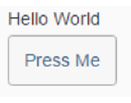
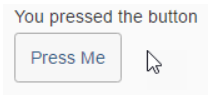

Events
This sections shows an example of a pressevent.
You can enhance the XML composite control created in the first step by adding a button. It's as simple as doing it in an XML view.
<core:FragmentDefinition xmlns:m="sap.m" xmlns:core="sap.ui.core">
<m:HBox>
<m:Text text="{$this>/text}" />
<m:Button text="Press Me" />
</m:HBox>
</core:FragmentDefinition>
Now the sample should look like this:

Sample UITo handle the press event of the new button in the interface, first define the handler in the XML file, and then add a method in the JS file:
<core:FragmentDefinition xmlns:m="sap.m" xmlns:core="sap.ui.core">
<m:HBox>
<m:Text text="{$this>/text}" />
<m:Button text="Press Me" press="_handlePress"/>
</m:HBox>
</core:FragmentDefinition>
...
var SimpleText = XMLComposite.extend("fragments.SimpleText", {
...
});
SimpleText.prototype._handlePress = function () {
this.setText("You pressed the button");
}
return SimpleText;
If you click the button now, the text should change:

Changed Sample UI